ME-446 Artificial Intelligence & Internet of Things — Complex Engineering Problem, Fall 2026 Department of Mechanical Engineering, NED University of Engineering and Technology, Karachi
| Group | ____________________ |
| Group members | ____________________ |
| Submitted to | Course teacher, ME-446 |
| Submission date | 04 November 2026 |
| Dataset | Piecuch & Żabiński, Scientific Data 12, 650 (2025), CC BY 4.0 |
| Code and artifacts | This repository (milling-cep/) |
This project builds an AI safety monitor for CNC milling. The public dataset used by Piecuch and Żabiński contains 968 milling cycles recorded with eight accelerometer channels and twelve current channels, under two radial depth-of-cut (RDOC) settings: an optimal 4.5 mm and an aggressive 8 mm. Instead of reproducing the authors' tool-wear model, this CEP treats RDOC as a categorical target and asks a new engineering question: can a model detect a non-optimal, high-risk cut from the sensor signature alone, before the condition damages the tool or the machine?
A random forest was selected from four candidates after grouped validation. At a tuned threshold of 0.444 it flags 96.2 % of dangerous cycles (204 of 212) with 69.9 % precision and an MCC of 0.762. Leave-one-tool-out validation gives the same recall (0.962) and MCC 0.778, and a model trained without experiments P002 and P108 flags 97.8 % of the unseen dangerous experiment while clearing 100 % of the unseen optimal experiment. The main residual risk is a high false-alarm rate on one optimal tool (tool 7), which is traced to the dataset's confounded design: RDOC is constant within each tool and experiment, so tool identity, material batch and wear stage cannot be fully separated from the cutting condition.
The work delivers cleaned and audited data, a reproducible notebook, eleven publication-quality figures, a Streamlit dashboard, Tableau-ready extracts with a build guide, and this report.
In CNC milling, the radial depth of cut controls how much of the cutter's diameter engages the workpiece. A conservative engagement (RDOC = 4.5 mm on a 10 mm cutter) is stable and is used for normal production. A very large engagement (RDOC = 8 mm, i.e. 80 % of the diameter) raises the chip load, the cutting force and the spindle torque. If the setup, holder or fixture is not stiff enough, the result is chatter, overload, accelerated tool wear, scrap or a broken tool. The operator normally knows the programmed parameters, but a process monitor does not: it sees only vibration and current. The engineering value of the model is as an independent check that the machine is running the condition it is supposed to run, and as an alarm when an aggressive parameter set is used unintentionally or without the matching tool.
Objective: classify each milling cycle as optimal (RDOC = 4.5 mm) or non-optimal / dangerous (RDOC = 8 mm) from the accelerometer and current statistics of that cycle.
| Item | Definition |
|---|---|
| Task | Supervised binary classification (not regression, not wear estimation) |
| Target | RDOC_class = 1 if RDOC = 8 mm, 0 if RDOC = 4.5 mm |
| Inputs | 120 sensor statistics: 8 accelerometer channels and 12 current channels, each with min, max, mean, std, skew and kurtosis |
| Unit of analysis | One milling cycle (Pxxx_Fyy_Czz) |
| Grouping unit | Cutting tool (ToolIndex) — the leakage-safe validation unit |
| Positive class | Dangerous (minority: 212 of 968 cycles, 21.9 %) |
| Operational decision | Flag the cycle for operator attention; not an automatic machine stop |
The task is a process-monitoring problem, not a tool-life problem. It is deliberately different from the source paper's wear regression and uses a target that the original authors did not model, which satisfies the CEP requirement for a novel analysis on an open dataset.
A larger radial engagement increases the engaged cutting-edge length and the chip cross-section. Cutting force and spindle torque rise roughly proportionally, which appears as a higher mean spindle/drive current, greater current fluctuation and higher vibration amplitude. The mean of the drive-axis acceleration is sensitive to the static force offset; the standard deviation of the drive and spindle currents is sensitive to load fluctuation; kurtosis and skew capture impulsive or chattering behaviour. These statistics are therefore not arbitrary features: they are the signatures that cutting mechanics predicts should change with RDOC.
Piecuch, M. & Żabiński, T., A new open dataset from a milling process – data for classification and estimation of tool life, Scientific Data 12, 650 (2025). DOI: 10.1038/s41597-025-04923-y
Data archive: DOI 10.6084/m9.figshare.28589216,
licensed CC BY 4.0. Accessed October 2026. The raw files are kept unchanged in data/raw/
(FeatureAndMetadata_Milling.csv, metadata.xlsx); the raw 25 GB time-series archive is not
redistributed and was not available locally.
| Property | Value |
|---|---|
| Milling cycles (rows) | 968 |
| Experiments (workpieces) | 24 |
| Layers | 172 |
| Cutting tools | 14 |
| Sensor statistics | 120 |
| Source metadata columns | 11 |
| Accelerometer channels | 8 |
| Current channels | 12 |
| Constant process settings | 3200 rpm, 640 mm/min, 10 mm cutter |
| Dangerous cycles | 212 (21.9 %) |
| Optimal cycles | 756 (78.1 %) |
| Experiments / tools with both classes | 0 / 0 |
Two independent sources (the feature CSV and metadata.xlsx) were cross-checked row for row. All
nine shared metadata fields, the row order and the row count (968) match exactly, so the merge cannot
silently misalign a cycle with its metadata.
| Check | Result | Decision |
|---|---|---|
| Missing values | 0 | None needed |
| Duplicate full rows | 0 | None |
| Duplicate sensor vectors | 0 | None |
| Infinite sensor values | 0 | None |
| Zero-variance sensor features | 0 | None |
| Constant predictors | ToolRotation, FeedRate, ToolDiameter |
Excluded — no information |
Censored cycles (CycleToFailure = 0) |
14 | Retained — valid failure records |
| Single-cycle experiment | P114 | Retained — genuine early failure |
| Accelerometer values at the ADC floor | 4 rows | Retained — genuine clipping |
| Rows with ≥ 5 features outside a 5×IQR fence | 52 | Flagged, not deleted |
| Experiments / tools containing both classes | 0 / 0 | Grouped validation required |
| Tool type 2 at RDOC = 8 mm | 0 cycles | Discussed as a confound |
The raw CSV has a UTF-8 BOM, a semicolon delimiter, a redundant first header row and mixed decimal conventions (comma decimals in metadata, dot decimals in sensor columns). These were parsed explicitly; the real header is on row 2. No row was deleted. Deleting the censored records, the single-cycle failure or the statistical outliers would remove exactly the difficult cases a safety monitor must handle, and the source paper treats them as valid observations.
RDOC_class = 1 for RDOC = 8 mm, 0 for 4.5 mm.signed_log1p(x) = sign(x)·ln(1+|x|) compresses the very large raw ADC counts while
preserving sign. It is applied to every feature for every model.RDOC and ADOC are constant within every experiment and every tool. A random row split therefore places cycles from the same tool in both training and test, and a flexible model can memorise that tool's signature. This is leakage through grouping, not through a feature column.
Four schemes are used:
A chronological split is not appropriate here: the rows are individual cycles grouped by tool and experiment, not a continuous time series of one process, and the source file is ordered by experiment. A chronological cut would put whole tools and conditions on one side and reproduce the same confounding in a less controlled way. Grouping by tool is the technically justified split.
| Model | ROC-AUC | PR-AUC | Recall | MCC |
|---|---|---|---|---|
| Random forest, random 5-fold | 0.998 | 0.994 | 0.976 | 0.933 |
| Random forest, tool-grouped 5-fold | 0.942 | 0.688 | 0.892 | 0.742 |
| Hist gradient boosting, random 5-fold | 1.000 | 0.999 | 0.986 | 0.988 |
| Hist gradient boosting, tool-grouped 5-fold | 0.936 | 0.782 | 0.877 | 0.650 |
The random split inflates ROC-AUC by about 0.06 and PR-AUC by about 0.21–0.31. Presenting the random-split number would have been a serious methodological error, so the grouped results are used throughout this report.
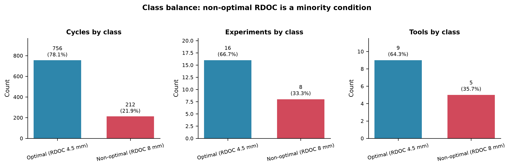
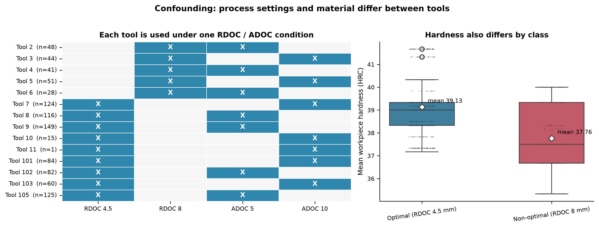
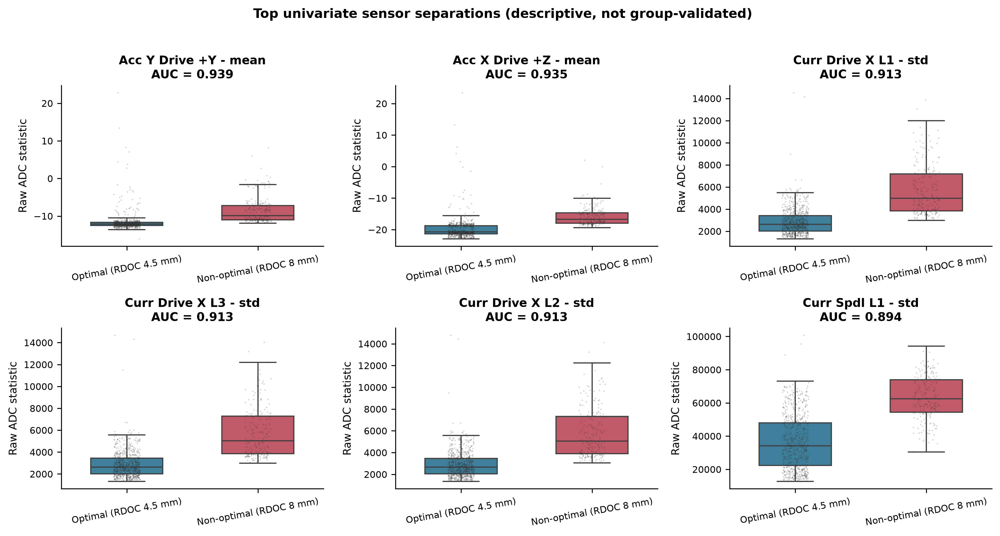
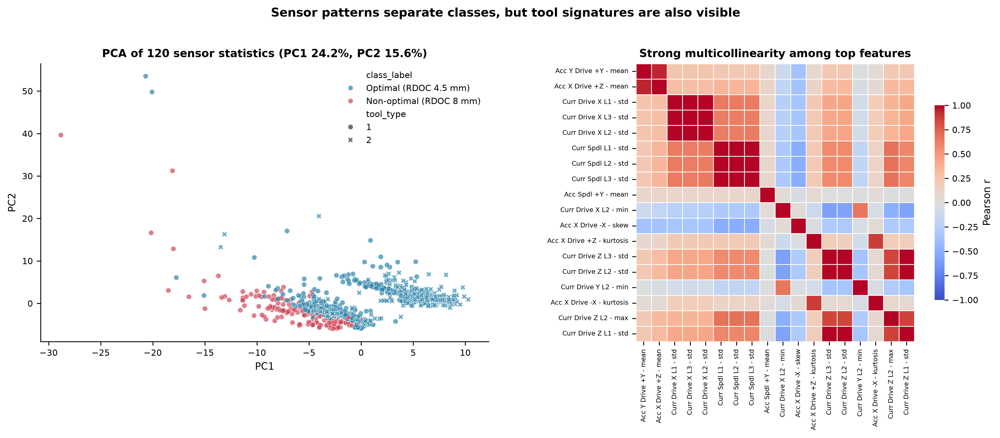
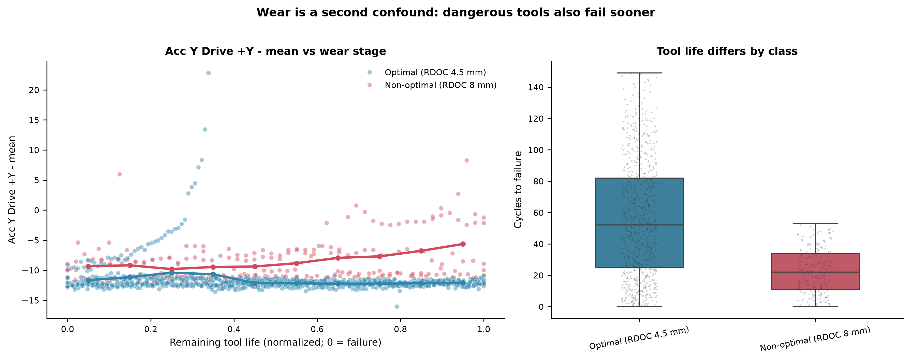
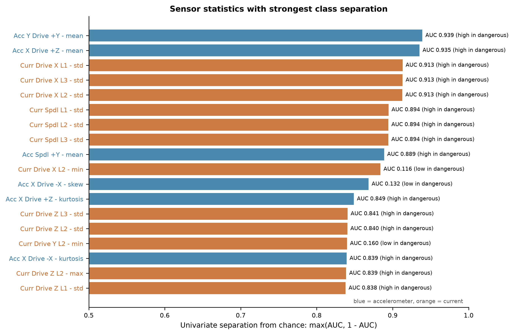
Only 212 of 968 cycles (21.9 %), 8 of 24 experiments and 5 of 14 tools operate at RDOC = 8 mm. A classifier that always predicts "optimal" already scores 78.1 % accuracy while catching zero dangerous cycles. The report therefore leads with recall on the dangerous class, PR-AUC, MCC and the confusion matrix, and treats accuracy as a secondary descriptive number.
Every tool and every experiment uses exactly one RDOC/ADOC combination. Tool type 2 is never used at RDOC = 8 mm, so the dangerous class is also entirely tool type 1. The dangerous group has a lower mean hardness (about 38 HRC versus 39 HRC) and a different remaining-life distribution. A model can therefore separate the classes by recognising the tool or the material rather than the cut. Grouped validation limits the optimism, but the confound cannot be removed by modelling; it is a property of the experimental design.
The strongest univariate features are the mean acceleration on the drive axes (AUC 0.935–0.939) and the standard deviation of the drive/spindle currents (AUC 0.894–0.913). All are higher in the dangerous class. That is the direction cutting mechanics predicts for a larger radial engagement, so the separation is not an artefact of a few extreme rows.
| Feature | Univariate ROC-AUC | Direction |
|---|---|---|
| Accelerometer – Y driving axle +Y – mean | 0.939 | higher in dangerous |
| Accelerometer – X driving axle +Z – mean | 0.935 | higher in dangerous |
| Current – driving axle X L1 – std | 0.913 | higher in dangerous |
| Current – driving axle X L3 – std | 0.913 | higher in dangerous |
| Current – driving axle X L2 – std | 0.913 | higher in dangerous |
| Current – spindle L1 – std | 0.894 | higher in dangerous |
| Current – spindle L2 – std | 0.894 | higher in dangerous |
| Current – spindle L3 – std | 0.894 | higher in dangerous |
Dangerous tools fail sooner: mean cycles to failure 22.7 versus 55.8 for optimal tools. Sensor features also drift as a tool wears, so part of the class separation may reflect wear stage rather than RDOC. The probability-versus-remaining-life view in the dashboard makes this visible; it is treated as a limitation, not hidden. The false alarms on tool 7 cluster late in tool life (mean normalised life 0.33), which is consistent with wear pushing an optimal tool into a dangerous-looking signature.
Tool type 2 never appears at RDOC = 8 mm, and the dangerous group has lower hardness. These differences are plausible false-positive drivers: an optimal cut with a harder workpiece can produce higher forces and currents, and the model has no hardness input to distinguish the two causes. This is another reason to present the model as a screening alarm rather than a definitive diagnosis.
| Model | Why it is appropriate | Configuration |
|---|---|---|
| Dummy (prior) | Establishes the no-skill baseline for this class balance | Predicts the majority class |
| Logistic regression | Transparent linear reference; tests whether a simple decision boundary is enough with 120 correlated, heavy-tailed features | Balanced class weights, robust scaling, C tuned |
| Random forest | Captures thresholds and interactions across correlated vibration/current channels without hand-crafted features; robust to outliers and to the large ADC scale after the log transform | 150 trees, balanced subsample weights, depth and leaf size tuned |
| Histogram gradient boosting | Strong modern tabular learner; tests whether boosting beats bagging on this dataset | Learning rate, leaf nodes and L2 tuned |
All four were evaluated on exactly the same folds and the same feature matrix.
| Model | ROC-AUC | PR-AUC | Recall | Precision | F1 | Specificity | MCC | Brier | Accuracy |
|---|---|---|---|---|---|---|---|---|---|
| Dummy (prior) | 0.386 | 0.184 | 0.000 | 0.000 | 0.000 | 1.000 | 0.000 | 0.173 | 0.781 |
| Logistic regression | 0.940 | 0.733 | 0.948 | 0.663 | 0.781 | 0.865 | 0.725 | 0.093 | 0.883 |
| Random forest | 0.942 | 0.688 | 0.892 | 0.724 | 0.799 | 0.905 | 0.742 | 0.082 | 0.902 |
| Hist gradient boosting | 0.936 | 0.782 | 0.877 | 0.620 | 0.727 | 0.849 | 0.650 | 0.107 | 0.855 |
At the fixed 0.5 threshold the random forest has the best precision, F1, specificity, MCC, Brier and accuracy; logistic regression has slightly higher recall and a very similar ROC-AUC; gradient boosting has the best threshold-independent PR-AUC but the weakest operating point. Because a safety monitor can move its threshold, the selection was confirmed at the tuned operating point rather than at 0.5.
The threshold was chosen on the pooled out-of-fold probabilities of the random forest by maximising F1. This gives 0.4437, below 0.5 because the class is imbalanced and because a missed dangerous cut is more expensive than a false alarm.
| Operating point | Threshold | Recall | Precision | F1 |
|---|---|---|---|---|
| Max-F1 (selected) | 0.444 | 0.962 | 0.699 | 0.810 |
| Highest precision with recall ≥ 0.90 | 0.499 | 0.901 | 0.726 | 0.803 |
Raising the threshold to 0.499 buys 2.7 points of precision but costs 6.1 points of recall. For a safety application that is a bad trade, so 0.444 is retained. The dashboard exposes the threshold as a slider so the cost ratio can be changed by the user.
| Metric | 5-fold tool groups | Leave-one-tool-out |
|---|---|---|
| Recall (dangerous) | 0.962 | 0.962 |
| Precision (dangerous) | 0.699 | 0.718 |
| F1 (dangerous) | 0.810 | 0.823 |
| MCC | 0.762 | 0.778 |
| Balanced accuracy | 0.923 | 0.928 |
| Specificity | 0.884 | 0.894 |
| ROC-AUC | 0.942 | 0.950 |
| PR-AUC | 0.688 | 0.712 |
| Brier score | 0.082 | 0.076 |
| Confusion matrix | 668 TP-optimal / 88 FP / 8 FN / 204 TP-dangerous | 676 / 80 / 8 / 204 |
The two estimates agree closely, which is the important result: the model is not dependent on one particular grouping of tools. Leave-one-experiment-out is higher (ROC-AUC 0.983, PR-AUC 0.895), because experiments share tools and layers and are therefore an easier holdout than a new tool.
The Brier score of 0.082 is low, but Figure 9 shows the probabilities are not perfectly calibrated: the model is conservative in the middle of the range and over-confident at the top (cycles scored around 0.87 are dangerous about 73 % of the time, not 87 %). Probabilities are therefore useful for ranking and for choosing a threshold, but they should not be read as exact risk without recalibration (Platt scaling or isotonic regression) on a larger tool sample.
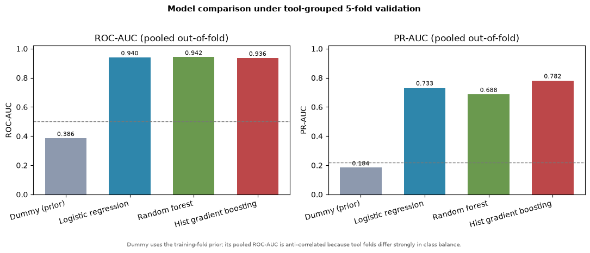
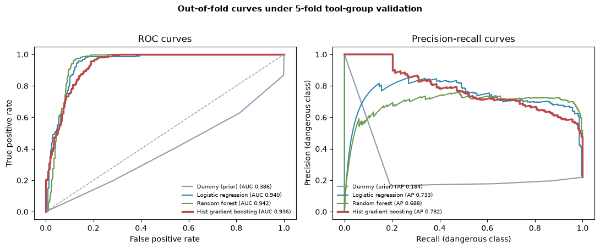
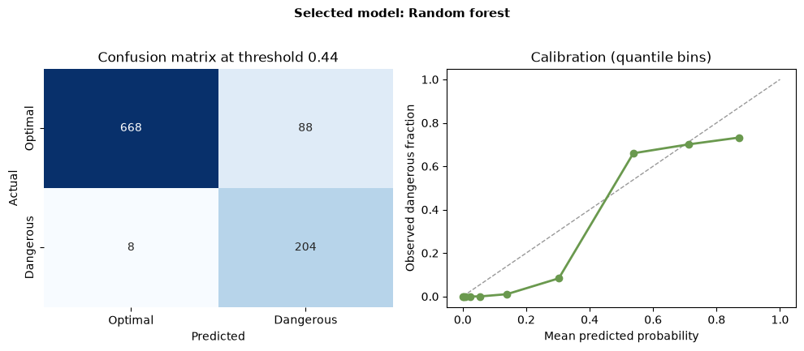
| Tool | Actual class | Cycles | Mean P(dangerous) | Flagged | Error type |
|---|---|---|---|---|---|
| 2 | Dangerous | 48 | 0.732 | 100 % | — |
| 3 | Dangerous | 44 | 0.746 | 100 % | — |
| 4 | Dangerous | 41 | 0.712 | 92.7 % | 3 missed |
| 5 | Dangerous | 51 | 0.623 | 94.1 % | 3 missed |
| 6 | Dangerous | 28 | 0.676 | 92.9 % | 2 missed |
| 7 | Optimal | 124 | 0.563 | 60.5 % | 75 false alarms |
| 8 | Optimal | 116 | 0.149 | 5.2 % | 6 false alarms |
| 9 | Optimal | 149 | 0.026 | 0 % | — |
| 10 | Optimal | 15 | 0.052 | 0 % | — |
| 11 | Optimal | 1 | 0.022 | 0 % | — |
| 101 | Optimal | 84 | 0.029 | 0 % | — |
| 102 | Optimal | 82 | 0.006 | 0 % | — |
| 103 | Optimal | 60 | 0.014 | 0 % | — |
| 105 | Optimal | 125 | 0.104 | 5.6 % | 7 false alarms |
False alarms (88). 75 come from optimal tool 7, 7 from tool 105 and 6 from tool 8. Tool 7 has a mean probability of 0.563, close to the dangerous tools, and its false alarms occur mostly late in tool life. Its hardness and geometry apparently produce a signature that overlaps the dangerous class. This is the single largest deployment risk: in a production cell it would trigger an inspection on roughly three of every five tool-7 cycles.
Missed dangerous cycles (8). Three from tool 4, three from tool 5 and two from tool 6, spread across tool life rather than confined to the first cycle. Their probabilities sit just below the threshold, so a small threshold reduction would recover them at the cost of more false alarms. No dangerous tool is systematically missed, which is better than losing an entire tool.
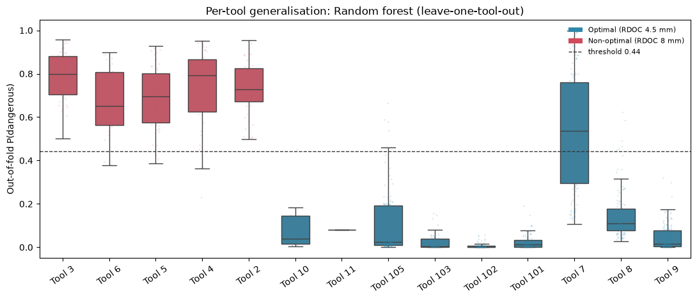
Figure 11 makes the same point visually: the dangerous tools sit as compact high-probability boxes, while tool 7's optimal cycles overlap them.
The asymmetry matters: 8 missed dangerous cycles out of 212 is a 3.8 % miss rate, while 88 false alarms out of 756 optimal cycles is an 11.6 % false-alarm rate. For a decision-support alarm that a human filters, this is an acceptable starting point; for an automatic stop it would not be.
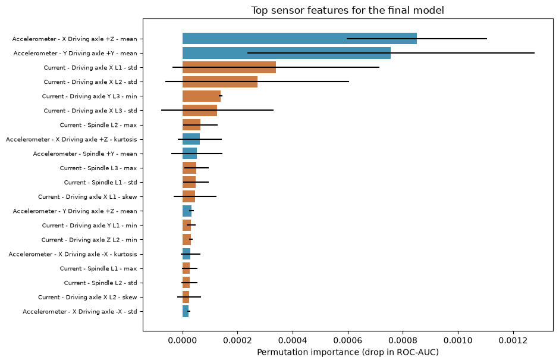
| Rank | Feature | Permutation importance (drop in ROC-AUC) |
|---|---|---|
| 1 | Accelerometer – X driving axle +Z – mean | 0.00085 ± 0.00026 |
| 2 | Accelerometer – Y driving axle +Y – mean | 0.00076 ± 0.00052 |
| 3 | Current – driving axle X L1 – std | 0.00034 ± 0.00038 |
| 4 | Current – driving axle X L2 – std | 0.00027 ± 0.00033 |
| 5 | Current – driving axle Y L3 – min | 0.00014 ± 0.00001 |
| 6 | Current – driving axle X L3 – std | 0.00013 ± 0.00020 |
| 7 | Current – spindle L2 – max | 0.00007 ± 0.00006 |
| 8 | Accelerometer – X driving axle +Z – kurtosis | 0.00006 ± 0.00008 |
| 9 | Accelerometer – spindle +Y – mean | 0.00005 ± 0.00009 |
| 10 | Current – spindle L3 – max | 0.00005 ± 0.00004 |
The absolute importances are small because the 120 features are highly correlated: shuffling one channel leaves the others to compensate. The ranking is what matters. The model relies on drive-axis mean acceleration and drive/spindle current variability, exactly the quantities that cutting mechanics says should rise with radial engagement. It does not rely on an identifier, a wear counter or a process setting, because those columns are not in the feature matrix.
The top feature is the mean of the drive-axis acceleration, not a peak or a kurtosis. That makes sense for a static force offset: a deeper radial cut shifts the whole vibration signal upward, so its DC level is a robust indicator. Current standard deviation ranks next because a heavier, more interrupted cut produces a more variable load.
Two experiments were held out entirely: P002 (RDOC = 8 mm, dangerous) and P108 (RDOC = 4.5 mm, optimal). A fresh random forest with the selected hyperparameters was trained on the remaining 22 experiments (841 cycles) and applied to the 127 held-out cycles.
| Experiment | Actual class | Cycles | Mean P(dangerous) | Min | Max | Flagged |
|---|---|---|---|---|---|---|
| P002 | Dangerous | 46 | 0.746 | 0.439 | 0.953 | 97.8 % (45/46) |
| P108 | Optimal | 81 | 0.006 | 0.000 | 0.046 | 0 % (0/81) |
The single P002 miss is the first cycle of the experiment (P002_F01_C1, P = 0.439, just below
the 0.444 threshold). A fresh tool has not yet developed the wear-driven increase in vibration and
current, so its first cut looks marginal. This is a genuine engineering find, not a random failure:
it argues for a rolling window or a two-cycle confirmation logic rather than a per-cycle verdict at
the start of a tool's life.
The final saved model, which uses all 968 cycles, scores representative individual cycles through the same 120-feature interface a deployment would use:
| Cycle | Experiment / tool | Actual | P(dangerous) | Decision |
|---|---|---|---|---|
P002_F12_C4 |
P002 / tool 2 | Dangerous | 0.967 | Flag |
P108_F12_C7 |
P108 / tool 102 | Optimal | 0.000 | Clear |
This satisfies the CEP requirement to demonstrate the final model on at least two previously unseen input cases, and it also tests a held-out experiment rather than a re-scored training row.
The classifier behaves like a data-driven cutting-force monitor. When the radial engagement increases from 4.5 mm to 8 mm, the chip load and the cutting force rise, the drive and spindle currents increase and become more variable, and the drive-axis vibration shifts upward. The forest combines several correlated channels into a decision boundary that separates the two conditions with 96 % recall at the selected operating point. The signal is therefore consistent with the mechanics of the process, not merely with the labels.
The model's errors are also interpretable. Tool 7 is an optimal tool whose signature overlaps the dangerous class, especially late in life; tools 4–6 occasionally produce a dangerous signature that falls just below the threshold. Both patterns point to the same physical reality: wear, material hardness and tool geometry move the sensor signature in the same direction as RDOC. A classifier trained on a design where these factors are perfectly confounded cannot fully attribute the signal to RDOC alone.
Consequence of an error. A false negative means a dangerous cut continues: higher force, faster wear, possible chatter, scrap or tool breakage. A false positive means an unnecessary retract or inspection, which costs cycle time but protects the machine. The threshold is therefore set to favour recall, and the recommended use is a human-in-the-loop alarm, not an automatic stop.
| CEP requirement | Delivered artifact |
|---|---|
| Raw dataset, unchanged | data/raw/FeatureAndMetadata_Milling.csv, data/raw/metadata.xlsx |
| Cleaned / transformed dataset | data/processed/milling_clean.csv, features.csv, metadata.csv, folds.csv, sensor_long.csv |
| Data audit and cleaning decisions | data/processed/CLEANING_LOG.md, data/processed/audit.json, data/processed/data_dictionary.csv |
| At least three visualisations | figures/fig01–fig11 (11 figures) |
| Three to five engineering insights | reports/EDA_INSIGHTS.md, Section 4 of this report |
| At least three ML algorithms | Dummy, logistic regression, random forest, histogram gradient boosting |
| Leakage-safe training/testing | Nested 5-fold tool-group CV, leave-one-tool-out, leave-one-experiment-out, random-split control |
| Unseen-case demonstration | Held-out experiments P002 and P108 (Section 8) |
| Reproducible notebook | notebooks/milling_cep_analysis.ipynb (executed end to end, 0 errors) |
| Interactive dashboard | dashboard/app.py (Streamlit, six tabs, threshold slider, scoring, upload) |
| Tableau workbook support | dashboard/tableau/*.csv + dashboard/tableau/README.md build guide |
| Technical report | reports/TECHNICAL_REPORT.md / .pdf |
| Presentation | reports/presentation/MILLING_CEP_SLIDES.pptx / .pdf (13 slides) |
| Poster | reports/poster/MILLING_CEP_POSTER.pdf (A2) |
| Notebook export | notebooks/exports/milling_cep_analysis.html / .pdf |
The Streamlit app is the working interactive dashboard delivered with the project. The CEP brief
names Tableau Public (or an approved alternative) for the dashboard; the Tableau-ready extracts and
the step-by-step build guide allow the same views to be assembled in Tableau Public without
re-deriving any numbers. The .twbx workbook itself is a binary Tableau artifact and must be built
in Tableau Desktop/Public — it is not generated by the Python pipeline.
# Python 3.12; dependencies in requirements.txt (numpy, pandas, scikit-learn,
# matplotlib, seaborn, plotly, streamlit, joblib, jupyter)
.venv/bin/python -m src.data # cleaning, audit, folds, long sensor table
.venv/bin/python scripts/02_eda.py # figures 01-06, EDA_INSIGHTS.md
.venv/bin/python scripts/03_modeling.py # model comparison, figures 07-10
.venv/bin/python scripts/05_select_rf.py # final model, threshold, unseen cases, figure 11
.venv/bin/python scripts/06_tableau_export.py
.venv/bin/jupyter nbconvert --to notebook --execute notebooks/milling_cep_analysis.ipynb
streamlit run dashboard/app.py
Random seed: 20261025. The notebook reproduces the same threshold (0.4437), the same selected-model
metrics and the same unseen-case summary as the saved artifacts.
The project was developed with Python 3.12 in a local virtual environment. Hardware: ordinary laptop CPU, no GPU. The full modelling pipeline (03 + 05) runs in a few minutes; the executed notebook in about two minutes. The random forest is deliberately kept small (150 trees, depth ≤ 10) so the whole study is reproducible on a student machine.
A random forest can separate optimal from non-optimal milling conditions from vibration and current statistics with 96 % recall and an MCC of 0.76 under tool-grouped validation, and it generalises to held-out experiments. The result is engineering-plausible: the model keys on drive-axis mean acceleration and current variability, the quantities that cutting mechanics predicts will rise with radial engagement. The main caveat is equally clear: because RDOC is confounded with tool identity, material and wear, the model is a strong screening alarm rather than a causal instrument. With a tool-specific baseline, two-cycle confirmation logic, calibrated sensors and a balanced confirmation experiment, it could become a practical shop-floor safety monitor.